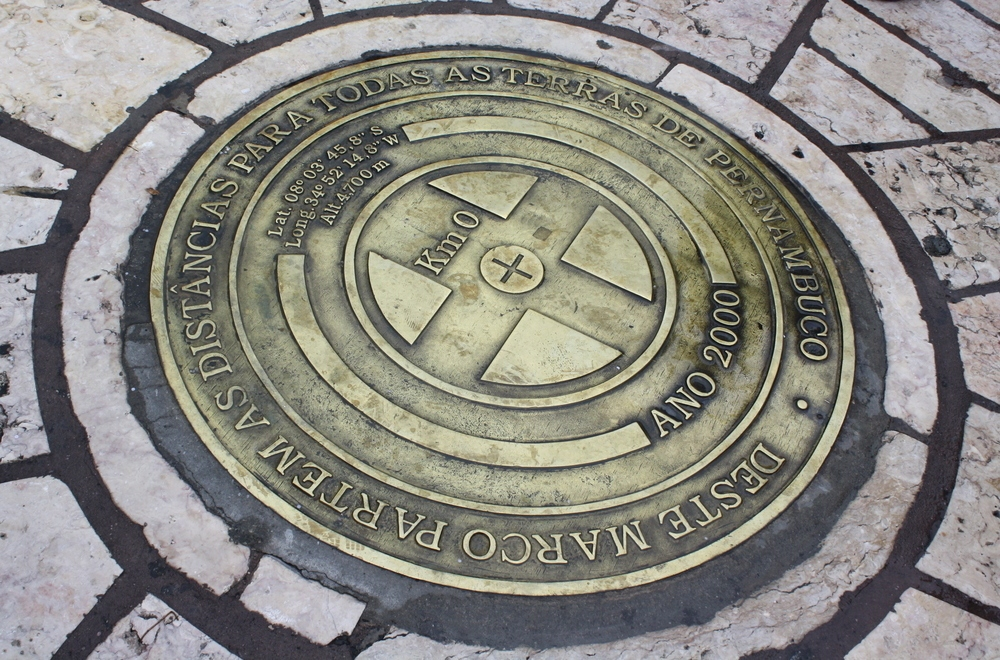

A cidade do Recife é uma das mais famosas do Nordeste, ela possui diversos pontos turísticos e um deles é o Marco Zero.
CONHEÇA O MARCO ZERO EM RECIFE ANTIGO E TODA SUA IMPORTÂNCIA HISTÓRICA!
O Marco Zero no Recife Antigo é um dos pontos turísticos mais importantes para quem deseja conhecer a capital de Pernambuco. Isso porque é um local de importância histórica que conta o nascimento da cidade e possui forte referência cultural. Além disso, o Marco Zero recebe, anualmente, diversas comemorações e manifestações e também é um lugar muito famoso para quem busca eventos como o Carnaval. A praça tem o nome original de Praça Barão do Rio Branco, todavia ficou conhecida como Praça do Marco Zero pelo fato de que nela encontra-se o quilometro zero das estradas de Pernambuco. É formada por um marco de cor vermelha doado pelo Clube do Automóvel. Na lateral da praça encontra-se a estatua do Barão do Rio Branco em bronze, com 2,80m de altura, do escultor Felix Charpentier. Já no centro pode ser vista a rosa dos ventos do pintor Cícero Dias. Nos períodos de momo a praça funciona como quartel general do carnaval multicultural do Recife.
Confira mais algumas imagens desse lugar íncrivel 🤩 🤩 🤩
-

- 
-

-